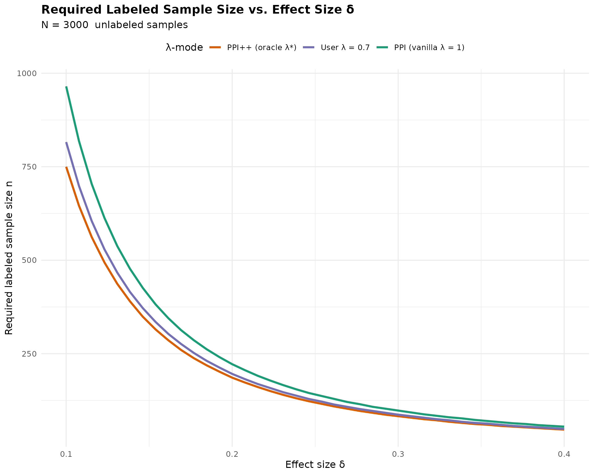

n_required_ppi_pp() for Mean and Regression PPI/PPI++ppi-sample-size.RmdPrediction-Powered Inference (PPI) and PPI++ reduce labeled sample size needs by using a prediction model trained on large unlabeled datasets.
This vignette demonstrates how to compute required required labeled sample size under:
All examples use the main function: n_required_ppi_pp()
which solves for the smallest labeled sample size
such that the asymptotic variance meets the target power level.
The core function has the following interface:
n_required_ppi_pp(
delta, N,
alpha = 0.05,
power = 0.80,
type = c("mean", "regression"),
lambda_mode = c("vanilla", "oracle", "user"),
lambda_user = NULL,
# mean inputs
sigma_y2, sigma_f2, cov_y_f,
var_f, var_res,
metrics, metric_type,
# regression inputs
c, H_L, H_U,
Sigma_YY, Sigma_ff_l, Sigma_ff_u, Sigma_Yf,
mode = c("error", "cap")
)Explanation:
delta: the effect size
for regression (OLS/GLM), or a shift in the mean.N: size of the unlabeled dataset, typically very
large.alpha: Significance level (two-sided). Default value is
.power: Desired statistical power that you want to
achieve. Default value is
.lambda_mode: determines whether
is fixed at 1 (Vanilla PPI estimator), chosen by the user
("user"), or optimized ("oracle").
sigma_y2,
sigma_f2, cov_y_f) or prediction metrics
(mse, var_f, accuracy, etc.).
compute_ppi_blocks().In the simplest case, you directly supply the population moments:
delta <- 0.20
N <- 3000
alpha <- 0.05
power <- 0.80
sigma_y2 <- 1.00
sigma_f2 <- 0.40
cov_y_f <- 0.15
n_required_ppi_pp(
delta = delta,
N = N,
type = "mean",
lambda_mode = "vanilla",
sigma_y2 = sigma_y2,
sigma_f2 = sigma_f2,
cov_y_f = cov_y_f
)
#> [1] 222
n_required_ppi_pp(
delta = delta,
N = N,
type = "mean",
lambda_mode = "oracle",
sigma_y2 = sigma_y2,
sigma_f2 = sigma_f2,
cov_y_f = cov_y_f
)
#> [1] 186The stronger the correlation between outcome () and the model prediction (), the more sample size reduction PPI++ yields relative to vanilla PPI.
Instead of providing moments, you can supply predictive performance metrics.
metrics <- list(
type = "continuous",
var_y = 1.00, # total outcome variance
mse = 0.20, # very strong model (small residual error)
var_f = 0.80, # predictions have high variance
cov_y_f = 0.70, # very high correlation model
m_obs = 500
)
n_required_ppi_pp(
delta = 0.15,
N = 520,
type = "mean",
lambda_mode = "vanilla",
metrics = metrics,
metric_type = "continuous"
)
#> [1] 151
n_required_ppi_pp(
delta = 0.15,
N = 520,
type = "mean",
lambda_mode = "oracle",
metrics = metrics,
metric_type = "continuous"
)
#> [1] 124m_obs is the number of labeled samples used to estimate
the prediction metrics (MSE, variance, accuracy, etc.). Finite-sample
corrections ensure the derived moments remain unbiased / feasible.
You can also supply classifier performance through a confusion matrix:
metrics <- list(
type = "classification",
# Confusion matrix (strong classifier)
tp = 225, # true positives
fp = 25, # false positives
fn = 25, # false negatives
tn = 225, # true negatives
# Total observed labeled data used to compute the metrics
m_obs = 500
)
# For reference:
# p_y = (tp + fn) / m_obs = (225 + 25)/500 = 0.50 (balanced)
# accuracy = (tp + tn)/500 = 450/500 = 0.90
# PPI sample-size calculation, λ=1
n_required_ppi_pp(
delta = 0.15,
N = 520,
type = "mean",
lambda_mode = "vanilla",
metrics = metrics,
metric_type = "classification"
)
#> [1] 43
# PPI++ oracle-λ
n_required_ppi_pp(
delta = 0.15,
N = 520,
type = "mean",
lambda_mode = "oracle",
metrics = metrics,
metric_type = "classification"
)
#> [1] 35For binary outcomes, the function internally computes:
using identities derived from the confusion matrix.
We now demonstrate the regression contrast mode.
Generate Data:
p <- 4
n_l <- 400
n_u <- 3000
beta <- c(0.7, -0.5, 0.2, 1.0)
X_l <- matrix(rnorm(n_l*p), n_l, p)
X_u <- matrix(rnorm(n_u*p), n_u, p)
Y_l <- drop(X_l %*% beta + rnorm(n_l, sd = 0.7))
f_l <- drop(X_l %*% beta + rnorm(n_l, sd = 0.6))
f_u <- drop(X_u %*% beta + rnorm(n_u, sd = 0.6))Construct PPI++ blocks for sandwich variance estimators:
blocks <- compute_ppi_blocks(
model_type = "ols",
X_l = X_l, Y_l = Y_l, f_l = f_l,
X_u = X_u, f_u = f_u,
beta = beta
)Solve sample size for contrast :
c_vec <- c(0, 1, 0, 0)
delta <- as.numeric(t(c_vec) %*% beta)
n_required_ppi_pp(
delta = delta,
N = n_u,
power = 0.90,
type = "regression",
lambda_mode = "vanilla",
c = c_vec,
H_L = blocks$H_L,
H_U = blocks$H_U,
Sigma_YY = blocks$Sigma_YY,
Sigma_ff_l = blocks$Sigma_ff_l,
Sigma_ff_u = blocks$Sigma_ff_u,
Sigma_Yf = blocks$Sigma_Yf
)
#> [1] 35
n_required_ppi_pp(
delta = delta,
N = n_u,
power = 0.90,
type = "regression",
lambda_mode = "oracle",
c = c_vec,
H_L = blocks$H_L,
H_U = blocks$H_U,
Sigma_YY = blocks$Sigma_YY,
Sigma_ff_l = blocks$Sigma_ff_l,
Sigma_ff_u = blocks$Sigma_ff_u,
Sigma_Yf = blocks$Sigma_Yf
)
#> [1] 23(We follow similar steps as described in OLS case above)
p <- 3
n_l <- 500
n_u <- 2500
beta <- c(1.2, -0.6, 0.5)
X_l <- matrix(rnorm(n_l*p), n_l, p)
X_u <- matrix(rnorm(n_u*p), n_u, p)
eta_l <- drop(X_l %*% beta)
eta_u <- drop(X_u %*% beta)
prob_l <- plogis(eta_l)
prob_u <- plogis(eta_u)
Y_l <- rbinom(n_l, 1, prob_l)
f_l <- plogis(eta_l + rnorm(n_l, sd = 1.5))
f_u <- plogis(eta_u + rnorm(n_u, sd = 1.5))Construct PPI++ blocks for sandwich variance estimators similar to previous OLS case:
blocks_glm <- compute_ppi_blocks(
model_type = "glm",
family = "binomial",
X_l = X_l, Y_l = Y_l, f_l = f_l,
X_u = X_u, f_u = f_u,
beta = beta
)Then solve for sample size:
c_vec <- c(1, 0, 0)
delta <- as.numeric(t(c_vec) %*% beta)
n_required_ppi_pp(
delta = delta,
N = n_u,
type = "regression",
lambda_mode = "vanilla",
c = c_vec,
H_L = blocks_glm$H_L,
H_U = blocks_glm$H_U,
Sigma_YY = blocks_glm$Sigma_YY,
Sigma_ff_l = blocks_glm$Sigma_ff_l,
Sigma_ff_u = blocks_glm$Sigma_ff_u,
Sigma_Yf = blocks_glm$Sigma_Yf
)
#> [1] 60
n_required_ppi_pp(
delta = delta,
N = n_u,
type = "regression",
lambda_mode = "oracle",
c = c_vec,
H_L = blocks_glm$H_L,
H_U = blocks_glm$H_U,
Sigma_YY = blocks_glm$Sigma_YY,
Sigma_ff_l = blocks_glm$Sigma_ff_l,
Sigma_ff_u = blocks_glm$Sigma_ff_u,
Sigma_Yf = blocks_glm$Sigma_Yf
)
#> [1] 41If the required labeled
()
exceeds the unlabeled
(),
the function throws an error by default
(mode = "error"):
out <- n_required_ppi_pp(
delta = 0.03,
N = 1000,
type = "mean",
sigma_y2 = 1,
sigma_f2 = 0.2,
cov_y_f = 0.05,
mode = "error"
)
#> Error: Infeasible: cannot find n satisfying required power.Switch to mode = "cap" to get an estimate of power at
:
out <- n_required_ppi_pp(
delta = 0.03,
N = 1000,
type = "mean",
sigma_y2 = 1,
sigma_f2 = 0.2,
cov_y_f = 0.05,
mode = "cap"
)
#> Warning: Required n exceeds search range; capping to n = N = 1000. Achieved
#> power = 0.1297.
out
#> [1] 1000
#> attr(,"achieved_power")
#> [1] 0.1296782
attr(out, "achieved_power")
#> [1] 0.1296782This chunk visualizes how required () decreases as effect size grows, and how oracle for PPI++ estimator provides a clear reduction in sample size estimations over vanilla PPI:
delta_grid <- seq(0.10, 0.40, length.out = 40)
## Shared parameters (mean-estimation case)
N <- 3000
sy2 <- 1.0 # Var(Y)
sf2 <- 0.4 # Var(f)
cyf <- 0.15 # Cov(Y, f)
lambda_user_value <- 0.70 # example user-specified λ
## Compute required n for each λ mode
results <- lapply(delta_grid, function(d) {
data.frame(
delta = d,
vanilla = n_required_ppi_pp(
delta = d,
N = N,
type = "mean",
lambda_mode = "vanilla",
sigma_y2 = sy2,
sigma_f2 = sf2,
cov_y_f = cyf
),
oracle = n_required_ppi_pp(
delta = d,
N = N,
type = "mean",
lambda_mode = "oracle",
sigma_y2 = sy2,
sigma_f2 = sf2,
cov_y_f = cyf
),
user = n_required_ppi_pp(
delta = d,
N = N,
type = "mean",
lambda_mode = "user",
lambda_user = lambda_user_value,
sigma_y2 = sy2,
sigma_f2 = sf2,
cov_y_f = cyf
)
)
})
df <- bind_rows(results) |>
pivot_longer(cols = c("vanilla", "oracle", "user"),
names_to = "mode",
values_to = "n")
ggplot(df, aes(delta, n, color = mode)) +
geom_line(size = 1.2) +
scale_color_manual(
values = c(
vanilla = "#1B9E77",
oracle = "#D95F02",
user = "#7570B3"
),
labels = c(
vanilla = "PPI (vanilla λ = 1)",
oracle = "PPI++ (oracle λ*)",
user = paste0("User λ = ", lambda_user_value)
)
) +
labs(
title = "Required Labeled Sample Size vs. Effect Size δ",
subtitle = paste("N =", N, " unlabeled samples"),
y = "Required labeled sample size n",
x = "Effect size δ",
color = "λ-mode"
) +
theme_minimal(base_size = 12) +
theme(
legend.position = "top",
plot.title = element_text(face = "bold")
)
This vignette demonstrated:
PPI++ typically yields the smallest labeled sample size, especially when the prediction model is strong and the correlation ( ) is high.